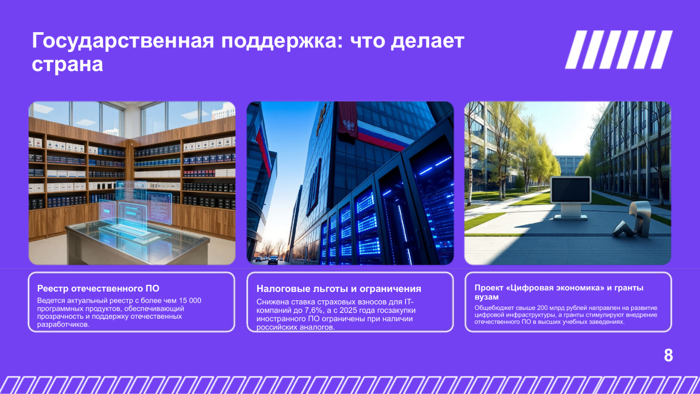

Что такое импортозамещение?
Импортозамещение ‐ это политика, направленная на замену иностранных товаров, услуг и технологий отечественными аналогами. В сфере ИТ это означает переход на отечественное программное обеспечение (ПО), оборудование и платформы, разработанные в России.

Предпосылки импортозамещения
Активное развитие импортозамещения в ИТ обусловлено рядом факторов:
- Санкционное давление западных стран с 2022 года
- Уход крупных зарубежных ИТ-провайдеров
- Необходимость обеспечения цифрового суверенитета
- Государственные требования по использованию отечественного ПО
Отечественные альтернативы
Российские разработчики предлагают широкий спектр решений:
- Операционные системы: Astra Linux, ALT Linux, Rosa Linux
- Офисные пакеты: МОЙ ОФИС, Р-7, Офисный пакет МИНЦИФРЫ
- СУБД: Postgres Pro, Tarantool, ClickHouse
- Инструменты коллаборации: ВКОнтакте, Яндекс.Телемост, SberJazz
Медиаматериалы
🎥 Скринкаст: Импортозамещение в ИТ
🎙 Подкаст: Импортозамещение в ИТ
📊 Презентация: Импортозамещение в ИТ